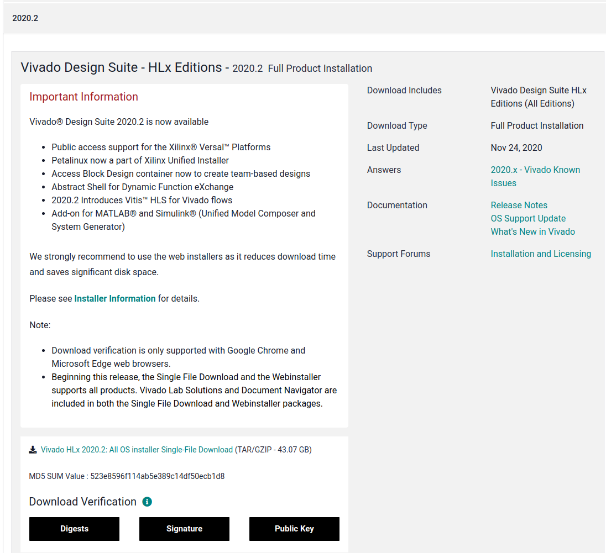

Linux Vivado Installtion
Vivado Installtion process
open terminal and type these commands
sudo apt update & sudo apt upgrade
sudo apt install build-essential
sudo apt-get install libstdc++6:i386
sudo apt-get install libgtk2.0-0:i386
sudo apt-get install dpkg-dev:i386
sudo apt install python3-pip
sudo apt install libtinfo6 libncurses6
download Vivado HLx 2020.2: All OS installer Single-File Download (TAR/GZIP - 43.07 GB)
click on this link Vivado 2020.2
